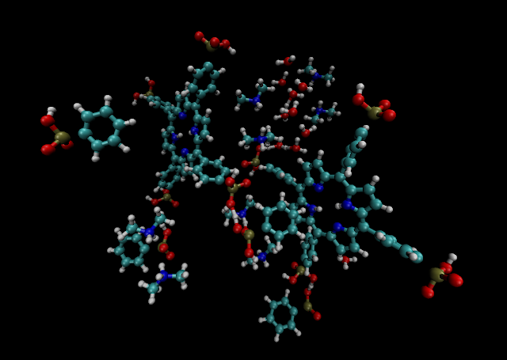
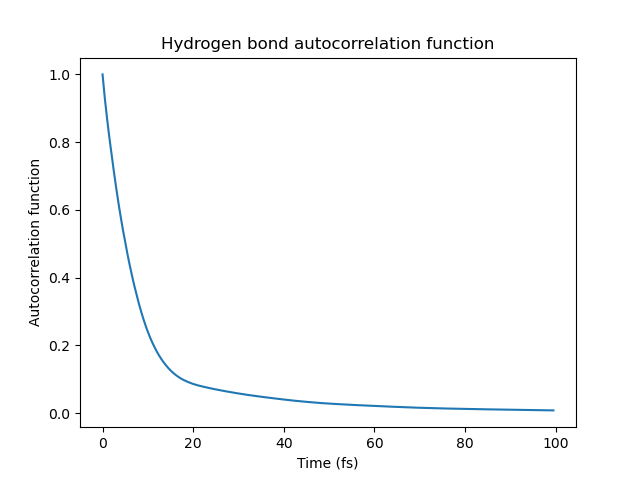

为没有拓扑信息的系统分析氢键 - Analyzing Hydrogen Bonds in Systems without Topological Information
背景介绍 - Background
组里的人要分析一个系统的氢键数量和氢键自相关函数（Hbond autocorrelation function，hbacf）。
A colleague in our group is tasked with analyzing the number of hydrogen bonds and the hydrogen bond autocorrelation function (hbacf) in a system.

通常来说，想要获得氢键相关的信息，如果是Gromacs模拟的系统，直接用Gromacs分析就可以。对于其他系统，如果懂点python的话，也可以用MDAnalysis来分析。但是这两个软件必须要系统的拓扑信息（即键连接的信息）。但是我们是用cp2k做的量子力学模拟，根本就没有“键”的概念，也更无从谈起拓扑信息了。
VMD倒是可以在没有拓扑信息的条件下计算氢键，但是它给不出氢键的自相关函数，并且VMD非常容易报错，所以也没法用。
To obtain information about hydrogen bonds, if the system is simulated with Gromacs, one can directly use Gromacs for analysis. For other systems, if one is familiar with Python, MDAnalysis can be used for the analysis. However, both tools require the topological information of the system (i.e., the information on bond connections). But our simulations were conducted using cp2k for quantum mechanical calculations, where the concept of "bonds" doesn’t exist, let alone topological information.
VMD can calculate hydrogen bonds without topological information, but it cannot compute the autocorrelation function of hydrogen bonds. Moreover, VMD seems to encounter errors very frequently, rendering it unusable.
此外，系统中除了要分析的分子外，还有一些水分子，我们不想分析水分子产生的氢键，但我们的轨迹文件里又区分不开不同的氧原子和氢原子。这说明我们要么手动编辑轨迹文件，要么只能手动写代码了。
Additionally, besides the molecules of interest, there are water molecules in the system whose hydrogen bonds we do not wish to analyze. However, our trajectory files do not differentiate between the various oxygen and hydrogen atoms. This means we must either manually edit the trajectory files or resort to writing our own code.
还有一个小难点：我们的系统不是正交系统（系统晶胞的三个边长的夹角不都是90度），而且我们也没有晶胞（unit cell）在模拟过程中尺寸变化的信息。这无论如何都会影响 对穿过边界的氢键的判断。
Another minor issue is that our system is non-orthogonal (the angles between the sides of the unit cell are not all 90 degrees), and we do not have information on the size changes of the unit cell during the simulation. This will inevitably affect the judgment of hydrogen bonds that cross boundaries.
简单搜索了一下发现网上没有现成的脚本（估计也不能有，因为要求太多了），于是就自己动手撸了。
A quick search revealed that there are no ready-made scripts available online (probably because the requirements are too complex), so we decided to develop our own.
事后看来，似乎可以用MDAnalysis.topology.guessers.guess_bonds猜测生成键的信息，然后计算氢键的各个性质。非正交的晶胞也可以用MDAnalysis.transformations.boxdimensions设置。只需手动编辑轨迹文件，再生成一个拓扑文件，应该是可以用的......
但是调试这些东西也可能花更长的时间，整不好还不如自己写代码快。
In hindsight, it seems possible to use MDAnalysis.topology.guessers.guess_bonds to guess and generate bond information, and then compute various properties of hydrogen bonds. Non-orthogonal cells can also be addressed with MDAnalysis.transformations.boxdimensions. With manual editing of the trajectory files and generating a topology file, it should work...
But debugging these things might take even longer, and it might not be faster than writing our own code.
1. 读取轨迹，寻找氢键 - Reading the trajectory and identifying hydrogen bonds
首先先读取轨迹。我们的轨迹文件是.xyz结构。如下所示：
First, we read the trajectory. Our trajectory file is in .xyz format, where each frame is structured as follows:
1 | 375 |
读取这种轨迹非常简单，一个readline()循环，然后根据其split()出的列表长度判断，是把这一行储存在现有的帧中，还是把这一帧结束掉，储存到列表里，新建一帧。这里留了个心眼，估计之后对原子的位置的计算会非常多，所以把原子的位置储存为np.ndarray形式，而把原子的种类信息单独储存在另一个列表中。
Reading this type of trajectory is quite straightforward: a
readline() loop is used, and then based on the length of
the list obtained from its split(), it is determined
whether to store the line in the current frame or to end the frame and
store it in a list, then start a new frame. Anticipating frequent
calculations on atomic positions in subsequent steps, the atomic
positions are stored in the form of an np.ndarray, while
the atomic type information is kept in a separate list.
下一步是判断系统内有哪些氢键。这个没有捷径，只能一帧一帧地判断。这也是本程序中最慢的一步。
氢键的判断的标准不一，通常来说，如果 氢键受体原子(D)与氢键供体原子(A)之间的距离 小于一个值，且 氢键受体原子-氢原子(H)-氢键供体原子 大于一个角度时，就认为这是一个氢键。有时D-H的距离也会考虑在内。
我采用的标准是 D-A小于3.5A，DHA角不小于150°，且D-H小于1.2A。它不是最合理的判断标准，但应该可以用。
为了少判断一点角度，多判断一点距离，D-A小于1.8A的我也都认为不是合理的氢键，因为D-A的化学键最长也差不多有1.7A。
The next step is to determine the hydrogen bonds present in the system. This process has no shortcut and must be done frame by frame, making it the slowest step in the program.
The criteria for identifying hydrogen bonds vary, but generally, if the distance between the hydrogen bond acceptor atom (D) and the hydrogen bond donor atom (A) is less than a certain value, and the angle formed by the hydrogen bond acceptor atom, hydrogen atom (H), and hydrogen bond donor atom is greater than a certain angle, then it is considered a hydrogen bond. Sometimes the distance between D and H is also taken into account.
The criteria I used are: D-A less than 3.5 Å, DHA angle not less than 150°, and D-H less than 1.2 Å. While not the most accurate criteria, they should be functional.
To reduce the number of angle calculations and focus more on distance, I also consider any D-A distance less than 1.8 Å as not a valid hydrogen bond, because the longest chemical bond between D and A is also about 1.7 Å.
寻找氢键，首先是计算两个原子之间的距离，这里需要用一点高数的几何学的知识。由于本系统含有周期性边界，且非正交，所以需要先把原子坐标转换为相对于晶胞的坐标，然后计算其距离，并四舍五入成最小的值，然后再转回正常的坐标。
因为我们没有每一步的晶胞尺寸数据，所以只能用平均值，导致晶胞参数变动较大的一些帧（如果有的话）处 无法准确判断边界处的氢键。
To find hydrogen bonds, the first step is to calculate the distance between two atoms, requiring some knowledge of calculus and geometry. Given that our system has periodic boundaries and is non-orthogonal, it's necessary to convert the atomic coordinates into coordinates relative to the unit cell, calculate their distance, round it to the nearest minimum value, and then convert back to the standard coordinates.
We lack the cell size data for each step, so we must use an average value. This approach may lead to inaccuracies in determining hydrogen bonds at the boundaries of frames with significant variations in cell parameters, if any exist.
1 | # box size, in Angstrom |
计算三个原子之间的角度也是一样，首先计算从H到D的向量（计算向量和距离的唯一区别就在于，向量不需要最后对三个差值平方求和后开根号），然后计算从H到A的向量。这两个向量的夹角的cos值就是a·b/(|a||b|)。为了稍微省一点计算步骤，这里不把它转换成角度，直接用cos值比较。代码如下：
Calculating the angle between three atoms follows a similar process. First, calculate the vector from H to D (the only difference between calculating the vector and the distance is that for the vector, you don't need to take the square root of the sum of the squares of the three differences), and then calculate the vector from H to A. The cosine of the angle between these two vectors is given by a·b/(|a||b|). To save some computational steps, the comparison is made directly using the cosine value instead of converting it to an angle. The code is as follows:
1 | def direction_vector(coord1, coord2): |
寻找所有潜在的氢键受体与供体，以及所有的H原子，然后是套用三层循环来“逐个判断”每个原子三元组是否形成氢键。丑陋的代码如下所示：
To identify all potential hydrogen bond acceptors, donors, and all hydrogen (H) atoms, a triple nested loop is employed to "individually assess" whether each set of three atoms forms a hydrogen bond. The crude code is as follows:
1 | for num_d in indices_da: |
这三层循环外，还有一个对帧循环。
Outside these three nested loops, there is another loop iterating over the frames.
其实，如果这个系统是正交的话，可以用kdtree来非常方便地统计与D距离小于1.2的H，和与D距离小于3.5的A。虽然也是三层循环，但是不用判断原子之间的距离了，计算速度超级加倍，代码如下所示。
In fact, if the system were orthogonal, a k-d tree could be used to efficiently identify H atoms within a 1.2 Å distance from D, and A atoms within a 3.5 Å distance from D. Although this still involves three nested loops, there is no need to calculate the distances between atoms directly, which significantly speeds up the computations. The code for this approach is as follows:
1 | atom_h = [atom == 'H' for atom in atoms] |
为了估算无聊的等待有多久，我在对帧循环的末尾添加了这么一个小进度条：
To estimate the duration of the tedious waiting period, I added a small progress bar at the end of the loop over frames:
1 | percent = prec / len(frames) * 100 |
寻找完所有的氢键后，使用pickle包把氢键的信息储存为二进制文件，因为氢键的信息储存在一个自定义类的列表里。我感觉把氢键储存为一个字典列表，然后json.dump也未尝不可。
After identifying all the hydrogen bonds, the information is stored
as a binary file using the pickle package, because the hydrogen bond
information is kept in a list of custom classes. It seems feasible to
store the hydrogen bonds as a list of dictionaries and then use
json.dump to save them.
至此，从文件中读取结构并寻找氢键这一部分就完成了，完整代码如下。我知道读者们（如果有的话）都在等这个。
With that, the part of reading the structure from the file and identifying hydrogen bonds is completed. The complete code is as follows, which I know the readers (if there are any) have been waiting for.
1 | import numpy as np |
2. 计算氢键数量 - Calculating the Number of Hydrogen Bonds
在有了氢键的数据之后，下一步是统计每一帧的氢键的数量。这一部分的代码相当简单，使用pickle读取数据后，简单用一个循环统计一下。代码如下所示。
After obtaining the hydrogen bond data, the next step is to count the number of hydrogen bonds in each frame. This part of the code is quite simple: after reading the data with pickle, a loop is used for the count. The code is as follows:
1 | import numpy as np |
3. 计算氢键自相关函数 - Calculating the Hydrogen Bond ACF
最后就是计算氢键的自相关函数了。自相关函数通常有2种，一个是连续（continuous）自相关函数，一个是间断（intermittent）自相关函数。
The final step is to calculate the autocorrelation function of the hydrogen bonds. There are typically two types of autocorrelation functions: continuous and intermittent.
有一篇文章讲了这两种自相关函数的区别。简而言之，连续自相关函数要求氢键形成后不能断裂，如果断裂后又重连就把它看成另一个新的氢键，而间断自相关函数不做此要求。
A paper discusses the differences between these two types of autocorrelation functions. In essence, the continuous autocorrelation function requires that once a hydrogen bond is formed, it must not break. If it breaks and then reforms, it is considered a new hydrogen bond. On the other hand, the intermittent autocorrelation function does not have this requirement.
首先统计间断的自相关函数，用一个循环处理氢键数据。
First, the intermittent autocorrelation function is calculated by processing the hydrogen bond data with a loop.
1 | # Create a dictionary to store the hydrogen bond information |
如果需要计算连续的自相关函数的话，首先要找出间断的自相关函数的断点，然后把它切断，然后粘贴到序列的最开始，然后用0补齐后面的数据。
To calculate the continuous autocorrelation function, it's necessary to identify the breakpoints in the intermittent autocorrelation function, cut at these points, and then move these segments to the beginning of the sequence. The rest of the data sequence is then padded with zeros to complete the series.
1 | if continuous: |
然后是利用快速傅立叶变换（fft）进行自相关函数的计算
Then, the autocorrelation function is calculated using the Fast Fourier Transform (FFT).
1 | def autocorrelation_fft(data): |
最后，把所有的氢键的自相关函数做一个平均，然后作图。函数图像如下所示（连续的氢键自相关函数）。
Finally, average the autocorrelation functions of all the hydrogen bonds and plot the result. The graph of the function is shown below (for the continuous hydrogen bond autocorrelation function).

这一部分的代码如下所示。
The code for this part is as follows.
1 | import numpy as np |